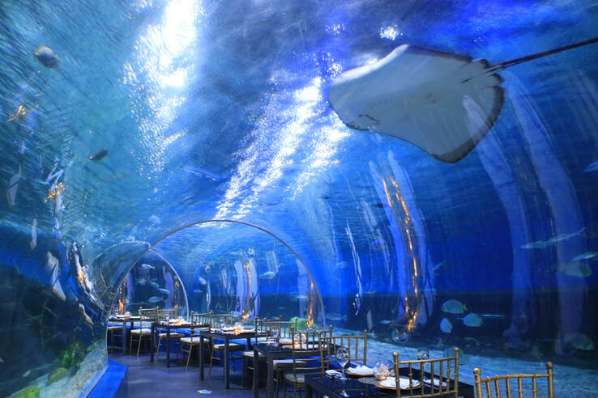
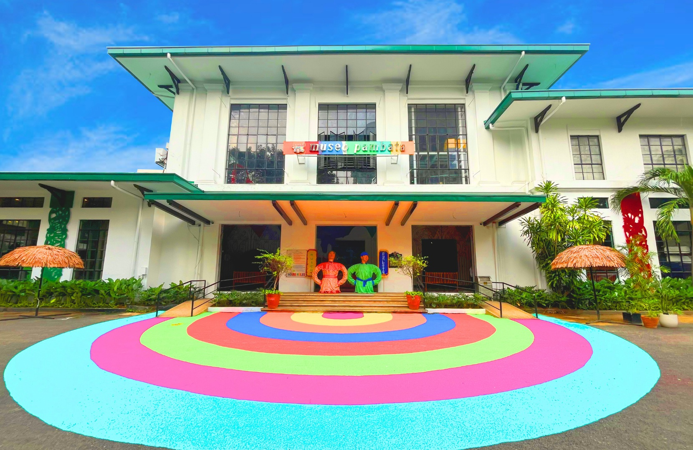
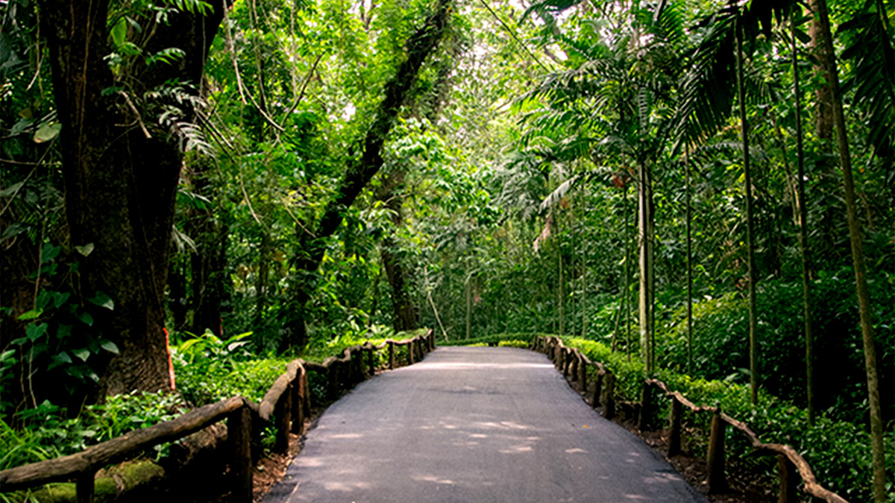
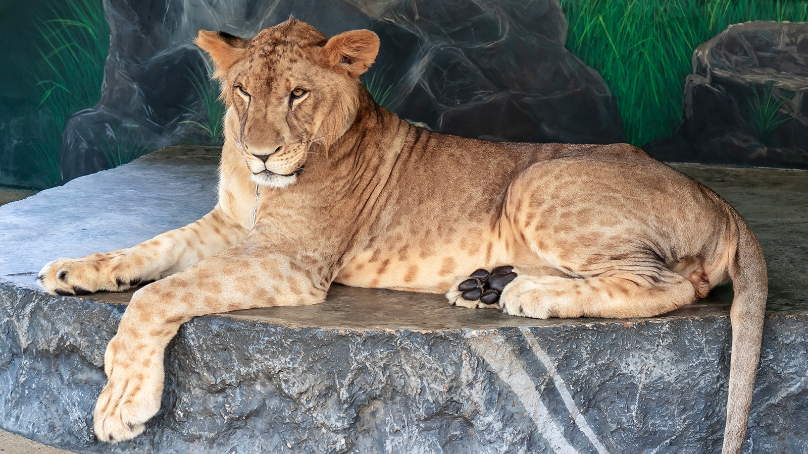
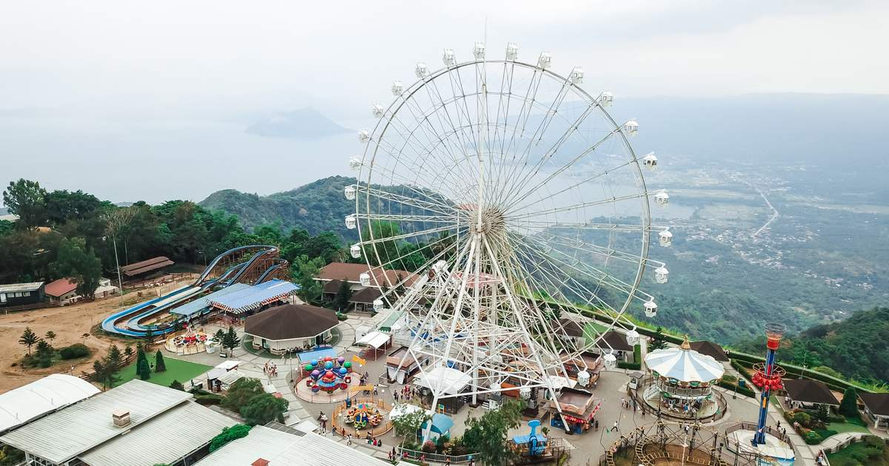
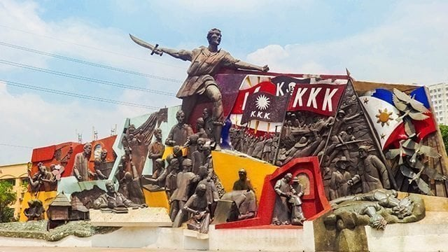

Kid-Friendly Destinations

1. Manila Ocean Park
Manila Ocean Park is a marine theme park in Manila featuring the Oceanarium, which houses 14,000 marine creatures in a 220° underwater walkway tunnel.
The park also offers other attractions like the Trails to Antarctica penguin park, live animal shows including sea lion and bird shows, a Fish Spa, and interactive encounters like feeding penguins or a Shark and Ray
Encounter.
It is a popular family-friendly destination for education and entertainment. Main attractions
Oceanarium: Walk through a 55-meter tunnel with a 220-degree view of Southeast Asian marine life, including sharks and rays.
Trails to Antarctica: A park featuring live Humboldt penguins, including a breeding program and a "snow village".
Sea Lion Show: A show with sea lions that combines entertainment with conservation messages.
All Star Bird Show: A show featuring various birds performing stunts and tricks.
Other activities and experiences
Fish Spa: A unique experience where small fish nibble on dead skin from your feet.
Shark and Ray Encounter: A chance to get closer to sharks and rays.
Penguin Feeding: An opportunity to feed the park's Humboldt penguins.
World of Creepy Crawlies: An exhibit showcasing frogs, insects, and spiders.
Souvenir shops: Various shops offer keepsakes like stuffed animals, shirts, and keychains.
Practical information
Location: Behind the Quirino Grandstand in Rizal Park, Manila.
Children: Admission is free for children 2 feet and below; those taller require a ticket.
Pets: Not allowed inside the park to prevent cross-infection with the park's animals.
Wheelchairs: Available for a refundable deposit of a valid ID, depending on availability. .
It is a popular family-friendly destination for education and entertainment. Main attractions
Oceanarium: Walk through a 55-meter tunnel with a 220-degree view of Southeast Asian marine life, including sharks and rays.
Trails to Antarctica: A park featuring live Humboldt penguins, including a breeding program and a "snow village".
Sea Lion Show: A show with sea lions that combines entertainment with conservation messages.
All Star Bird Show: A show featuring various birds performing stunts and tricks.
Other activities and experiences
Fish Spa: A unique experience where small fish nibble on dead skin from your feet.
Shark and Ray Encounter: A chance to get closer to sharks and rays.
Penguin Feeding: An opportunity to feed the park's Humboldt penguins.
World of Creepy Crawlies: An exhibit showcasing frogs, insects, and spiders.
Souvenir shops: Various shops offer keepsakes like stuffed animals, shirts, and keychains.
Practical information
Location: Behind the Quirino Grandstand in Rizal Park, Manila.
Children: Admission is free for children 2 feet and below; those taller require a ticket.
Pets: Not allowed inside the park to prevent cross-infection with the park's animals.
Wheelchairs: Available for a refundable deposit of a valid ID, depending on availability. .

2. Museo Pambata
Museo Pambata is the Philippines' first interactive children's museum, located in a heritage building on Roxas Boulevard in Manila. Opened in 1994, its mission is to inspire children to learn through hands-on exhibits on topics like Filipino culture, history, and the environment. The museum offers an alternative to traditional classrooms, with programs, events, and guided tours designed to make learning fun and engaging.
About the museum
What it is: An interactive, hands-on museum for children.
Mission: To provide children with educational programs that promote their holistic
welfare and rights, empowering them through experience and fun.
Founder: Nina Lim-Yuson, an early childhood educator.
Location: A heritage building on Roxas Boulevard in Manila, near Rizal Park.
Exhibits and programs
Interactive exhibits covering topics such as:
Filipino culture and history
The environment
Health
Science
Live storytelling sessions in the "Balay Yatu".
Guided tours that allow children to explore the exhibits.
A library.
Educational and fun activities for children.
Hours
Tuesdays to Saturdays: 11 a.m. to 8:30 p.m.
Sundays: 11 a.m. to 7:30 p.m.
Mondays: Closed
Note: Hours may vary, so it is recommended to check their social media or website for updates, such as temporary closures due to weather events. .

3. Intramuros
Intramuros is the historic walled city of Manila, built by the Spanish in the 16th century to serve as the center of political, religious, and military power in the Philippines. It is known as the "Walled City" because it is surrounded by high walls, bastions, and moats, and is a National Historical Landmark and a UNESCO World Heritage Site. Today, Intramuros is a major tourist attraction where visitors can see historic sites like Fort Santiago and San Agustin Church, walk on the old city walls, and experience a mix of history and modern life.
History: Built by the Spanish starting in 1571, Intramuros served as the seat of government for over 300 years. Its walls were constructed to protect the city from invaders, and its streets once housed only the Spanish elite. The area suffered heavy damage during World War II but has since been partially restored.
Key landmarks:
Fort Santiago: A citadel that was once a military defense and a prison for national hero José Rizal before his execution.
San Agustin Church: A UNESCO World Heritage Site and one of the oldest stone churches in the Philippines.
Manila Cathedral: A major religious building located in Plaza Roma.
Things to do:
Walk along the old city walls for a different perspective of the area.
Take a tour via kalesa (horse-drawn carriage).
Explore the museums, art galleries, and souvenir shops that are now nestled within the restored buildings and ruins.
Walk or cycle through the cobblestone streets and plazas.
Visit the historic Fort Santiago, which has dungeons and historical exhibits.

4. La Mesa Eco Park
La Mesa Ecopark is a 33-hectare nature reserve in Quezon City that offers both recreational activities and environmental education. It is open Tuesday to Sunday, with a 33-hectare park featuring activities like bird watching, nature walks, and wall climbing, and you can rent bikes or have picnics. Admission is free for Quezon City residents with proper ID, while non-residents pay PHP 20. Advance online reservations are required.
Location and hours
Location: East Fairview Subdivision, Novaliches, Quezon City
Operating Hours: Tuesday to Sunday, 7 AM to 4 PM
Holiday hours: During Christmas season, hours may be extended and online registration may not be required.
Admission
Quezon City residents: Free with valid QCitizen ID or government-issued ID
Non-QC residents: PHP 20 (as of late 2024)
Reservations: Advance online reservations are required via the Manila Water Foundation website.
Activities and amenities
Outdoor activities: Wall climbing, rappelling, archery tag, and nature walks
Recreation: Jogging, cycling (with bike rentals available), picnics, and company teambuilding
Nature: Bird watching and exploring the park's biodiversity
Other: The park also has specific areas for pre-nuptial and commercial shoots.
Important notes
The park's management recently shifted to the Manila Water Foundation.
The Ecopark is a successful rehabilitation project and a key part of the greater La Mesa Watershed, which is the primary water source for Metro Manila.
Future developments and activities are planned to align with the park's ecological mission.

5. Pasig Rainforest Park (RAVE)
Pasig Rainforest Park, also known as Rave Rainforest Park, is a public nature and adventure park in Pasig City, Philippines, featuring numerous attractions such as a mini-zoo, swimming pools, a boating lagoon, and a zip line. It was first opened in 1977 and was relaunched in 2013 with new facilities, with the aim of providing a recreational green space for the public. Entrance to the park is free, but there are minimal fees for most of the attractions, with discounts for Pasig residents.
About the park
Location: Maybunga, Pasig City, Metro Manila, Philippines.
Area: It spans approximately 8 hectares (20 acres).
History: Opened in 1977, it was expanded and relaunched as RAVE Rainforest Park in 2013 with additional features.
Management: Operated by the Pasig City Government through its City Environment and Natural Resources Office (CENRO).
Attractions and features
Adventure and sports: Zip line, obstacle course, skatepark, swimming pools, basketball and tennis courts, and an obstacle course.
Nature and wildlife: Mini-zoo, butterfly house, aviary, mammal sanctuary, reptile house, botanical garden, and flower fields.
Leisure and recreation: Boating lagoon, train ride, picnic and camping grounds, and an amphitheater.
Other amenities: Kiddie playground, maze garden, tree house, chess pavilion, fitness center, and a senior citizen's park.
Visitor information
Entrance fee: Free to enter the park grounds, but most attractions require a separate, minimal fee.
Discounts: Pasig residents receive discounted rates for the attractions.
Food: Visitors can bring their own food and drinks, and there are also stores and picnic/cottage rentals available.

6. Manila Zoo
The Manila Zoo is a public zoo in Malate, Manila, that opened in 1959 and was renovated to reopen in 2022. It features over 550 animals, a botanical garden, a butterfly garden, and a Wildlife Rescue Center. It is open daily from 9:00 AM to 6:00 PM and is managed by the city government with a focus on wildlife preservation, education, and recreation.
Location and hours
Location: Adriatico Street, Malate, Manila
Operating Hours: Daily, 9:00 AM to 6:00 PM (including weekends and holidays)
Attractions and features
Animals: Home to over 550 specimens, including mammals, birds, and reptiles. Notable residents include the white tiger Kois and the Asian elephant Mali.
Botanical Garden: Features over 10,000 plants and various gardens, such as a butterfly garden.
Wildlife Rescue Center: A center that takes in injured and abandoned animals.
Animal Museum: A museum is also available.
Management and mission
Management: Managed by the Manila City Government's Public Recreation Bureau.
Focus: Wildlife preservation, education, and recreation.
History
Opened: July 25, 1959
Renovated: Reopened to the public on November 21, 2022, after extensive renovations.

7. Lyger Animal Sanctuary (Rizal)
Basic Info
Location: Sitio Matagbak, Barangay Bagumbayan, Pililla, Rizal.
Contact: (02) 7502‑4294.
pilillarizal.gov.ph
Operating Hours: Daily from ~ 8:30 AM to 5:00 PM (some sources say up to 5:30 PM).
Entrance Fee: ~ ₱200 for adults; ₱160 for senior citizens and kids aged 2–7; kids under 2 are usually free.
What to See / Attractions
The sanctuary is known for ligers — a hybrid cross between a lion and a tiger.
They also reportedly have white lions, different kinds of tigers (e.g., Bengal, “strawberry”/golden tabby), a puma, as well as more “exotic” or less common animals.
Other animals: camels, mini‑horses, orangutans, birds (like peacocks), donkeys, and more.
There’s a small aquarium on site.
Visitors can feed certain animals: food for animals (like chicken legs for tigers) is sold on site.
Photo ops: People have taken pictures with animals like an albino python (for a fee).
Visitor Experience & Tips
According to TripAdvisor and other reviews, it’s not as big or “fancy” as big city zoos like Avilon Zoo, but it’s special because of its “rare kinds” of animals.
One reviewer said a typical visit can take up to about an hour, depending on how much you explore.
They note that feeding tigers costs extra (for chicken legs) and other animals like the camel, donkey, and orangutan are very interactive.
Things to Know / Consider
Because it's a “sanctuary” or “holding facility” (not just a typical zoo), some people caution that it's relatively small and that animal conditions might vary.
If planning to visit, bring cash for entrance and for animal feed or photo‑ops, since these are extra.
Wear comfortable shoes and prepare for walking — the place is not super large, but there is enough to explore.
Given that feeding animals is allowed, check with the staff about what is permitted and what’s safe.
Why Visit / What Makes It Special
Unique Animals: Seeing a “lyger” (lion-tiger hybrid) is rare, and it's one of the biggest draws.
Interactive Experience: More opportunities for feeding or close encounters (depending on animal) than in some larger, more regulated zoos.
Local Tourism Spot: It’s a notable attraction in Pililla, Rizal, so combining the visit with other local spots (like Pililla Wind Farm) makes for a good day trip.

8. Sky Ranch Tagaytay
Sky Ranch Tagaytay is a 5-hectare amusement park located on the Tagaytay-Nasugbu Highway, known for its views of Taal Lake and Volcano. It offers a mix of thrilling rides like the Sky Eye Ferris Wheel, Drop Tower, and Super Viking, along with family-friendly options and activities. In addition to rides, the park provides dining options and other attractions.
Key features and attractions
Rides:
Sky Eye Ferris Wheel: A 63-meter Ferris wheel with 32 air-conditioned gondolas, offering panoramic views of Taal Lake.
Thrill rides: Sky Cruiser, Super Viking, Drop Tower, and Log Coaster.
Family-friendly rides: Carousel, Sky Cruiser, Express Train, and others.
Other activities: Zipline, games, and the Ultra Play area with 4D simulators and pedal karts.
Scenery: The park is situated on a high-altitude cliff, providing scenic views of Tagaytay, Batangas, and Taal Volcano.
Dining: Various restaurants and snack kiosks are available within the park.
Location: It is located next to the Taal Vista Hotel along the Tagaytay-Nasugbu Highway.
Best time to visit: Weekdays, especially Wednesday through Friday, are less crowded than weekends and holidays.
What to know before you go
Tickets: You can purchase ride tickets individually or get a Ride-All-You-Can pass online, which may be a better value and allow you to skip lines.
Entrance fee: A separate entrance fee is required to enter the park.
Crowds: Expect larger crowds and longer wait times on weekends and during holidays.
Customer service: Some visitors have reported that customer service can be inconsistent.
9. DreamPlay (City of Dreams)
Dream Play" can refer to a theatrical style and the indoor theme park at City of Dreams Manila. Theatrical "dream plays" present a surreal, dream-like narrative using fluid transitions and fantasy to explore themes of the subconscious, while the theme park is a family-friendly, interactive experience featuring DreamWorks characters and activities like the Afro Circus and Shrek's Swamp Stomp.
Theatrical "A Dream Play"
What it is: A theatrical form where the narrative unfolds in a dream-like state, characterized by surreal imagery and a fluid structure.
Key aspects: Breaks conventional narrative, uses lighting and sound to create atmosphere, and encourages audience interpretation.
Notable example: August Strindberg's play A Dream Play, which explores themes of human suffering and disillusionment through the story of the Daughter of Indra. DreamPlay theme park
What it is: An indoor, interactive theme park inspired by DreamWorks films and characters, located in the City of Dreams Manila.
Activities: Features a variety of attractions, including the Afro Circus, Shrek's Swamp Stomp, Fast as Lightning Kung Fu Fighting, and a Dream Theater. Dress code: The park is designed for active play, so guests are advised to wear comfortable clothing and closed-toe shoes.
Tickets: Admission tickets can be purchased online through sites like Klook and may be subject to height and age restrictions for certain attractions.
Theatrical "A Dream Play"
What it is: A theatrical form where the narrative unfolds in a dream-like state, characterized by surreal imagery and a fluid structure.
Key aspects: Breaks conventional narrative, uses lighting and sound to create atmosphere, and encourages audience interpretation.
Notable example: August Strindberg's play A Dream Play, which explores themes of human suffering and disillusionment through the story of the Daughter of Indra. DreamPlay theme park
What it is: An indoor, interactive theme park inspired by DreamWorks films and characters, located in the City of Dreams Manila.
Activities: Features a variety of attractions, including the Afro Circus, Shrek's Swamp Stomp, Fast as Lightning Kung Fu Fighting, and a Dream Theater. Dress code: The park is designed for active play, so guests are advised to wear comfortable clothing and closed-toe shoes.
Tickets: Admission tickets can be purchased online through sites like Klook and may be subject to height and age restrictions for certain attractions.

10. Bonifacio Shrine / Heroes Park
The Bonifacio Shrine, also known as the Bonifacio and the Katipunan Revolution Monument, is a public park in Ermita, Manila, dedicated to revolutionary hero Andrés Bonifacio and the Philippine Revolution. The shrine's centerpiece is a 1998 monument by Eduardo Castrillo, depicting Bonifacio's life and role in the revolution. It also features the Kartilya ng Katipunan, a memorial wall for victims of the Martial Law era, and various other markers related to the Katipunan.
Key features and information
Location: Ermita, Manila, near the Manila City Hall.
Monument: A 1998 sculpture by Eduardo Castrillo that shows Bonifacio from his childhood to his leadership in the revolution.
Kartilya ng Katipunan: The Katipunan's Code of Conduct, written by Emilio Jacinto, is inscribed on the back of the monument.
Martial Law Memorial Wall: A wall commemorating the victims of the Martial Law era was inaugurated in 2006 within the park.
Other features: The park also contains different versions of the KKK flags and, following a rehabilitation, a central fountain.
Recent history
Rehabilitation: A major clean-up and rehabilitation project was completed in 2019 under Mayor Isko Moreno, which included repainting the monument, adding a fountain, and planting new flora.
Significance: The rehabilitation helped restore the shrine's dignity and renewed its status as a tourist and historical attraction.
Other Bonifacio monuments
The name "Bonifacio" is widely used in the Philippines, with many places, schools, and streets named after him.
A separate Bonifacio Monument is located in Caloocan City.
There is also a Bonifacio Shrine in Cavite City which is a separate historical site related to the execution of Bonifacio.